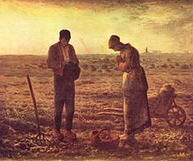

Rail was the dominant form of transportation. and was developing rapidly. It had definite advantages over previous forms of transportation such as the horse and carriage. They could carry more passengers, and it moved fast. It took 6 weeks to get from New York to Los Angeles. Previously, it would have taken twice as long!
Standard time zones are introduced in 1883 which allowed the railroads to operate more effectively and reduce accidents. It is not widely accepted by the public however.
The telegraph system is created in 1943. Morse code was developed as a result. Messages now take days as appose to weeks or even months. Hours are possible but not common. 1856 is the first trans-atlantic cable.
Alexander Graham Bell patents the telephone, and in 1878 the first telephone company, AT&T is founded enabling direct line communication.
The Angelus (1857–59) by Jean-François Millet
